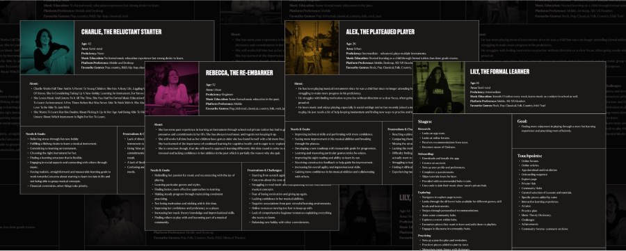
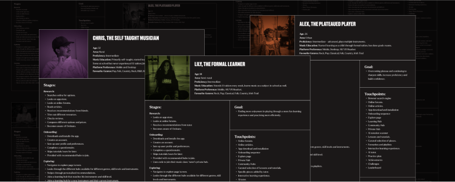
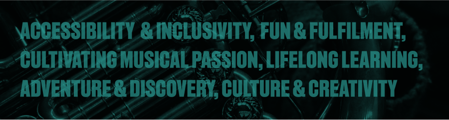
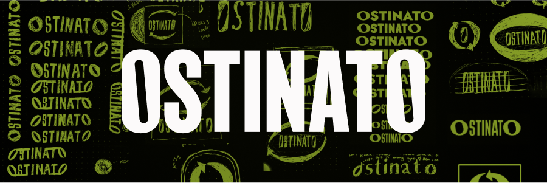
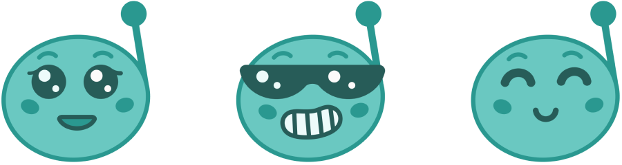

For my final year project I designed an app that uses AI technology to reimagine music education.

I aimed to tackle two main challenges in music education:
Limited Access - Not everyone has equal access to quality music education due to factors such as age, economic status, geographic location etc.
Maintaining Motivation - For musicians of any circumstance, maintaining one's proficiency and the motivation to keep playing and practicing can pose a serious challenge.
Ostinato is designed to help learners feel encouraged, supported and motivated on their musical journeys.
It’s an app for learning, practising and mastering any instrument with help from an AI tutor, who provides personalised feedback on your playing, supports notation and audio input, and adapts to your playing style. With curated content and a vibrant community, users can continually discover, learn and grow. Ostinato also facilitates better collaboration and resource-sharing among classes and ensembles.
Ostinato is designed for anyone with an interest in music and a willingness to learn, regardless of age, skill level, or any other factors. While this might seem broad, the reality is that music learners come in many forms, each with their own unique needs and frustrations. My goal has been create a space where all music learners can thrive.
Ostinato is a mobile application optimised for tablet screens, but with potential for multi-platform compatibility.


As a musician who enjoys both listening to music and playing different instruments, I am quite familiar with the challenges of music learning. From tackling new pieces to staying motivated during plateau periods, these experiences have inspired me to design something that helps learners overcome these hurdles effectively.
I spent a year on placement at Synergy Learning, gaining experience designing for learning management systems (LMS). This prepared me well for crafting a learning-centred experience.
A lecture on speculative design helped me think bigger and merge my personal passion with the knowledge I gained from my work placement. It sparked the notion: ‘What if there was an AI that could teach you music just like a real life tutor would?’
Through initial research, I learned of the challenges, but also the positive impact of music learning and believed that this idea could be a game changer, giving anyone the ability to easily pick up an instrument and learn how to play.
I first had to understand the different needs and frustrations of music learners through user research. Initially, I conducted research to validate my idea. This involved scouring the web and the library for relevant articles, testimonies, survey findings, journals and studies.
I then conducted a survey using google forms, posing pertinent questions aimed at understanding the experiences of musicians/learners and determining how to best serve their needs.
This received over 100 insightful responses that have have been invaluable throughout this project, guiding my decisions from feature inclusion to visual design.
I meticulously analysed the data from the responses and identified the main archetypes of learners and created empathy maps for each.

I then made user personas based on these empathy maps...
...which served as the foundation of my user journeys.
I also analysed competitors; their strengths, weaknesses, and how Ostinato could do better.

With these insights, I identified features of the app and organised them through card sorting to determine the best interface layout. Then I created user flows to map out the step-by-step interactions users would have with the app, ensuring a seamless and intuitive user experience.


Getting the branding right involved a lot of iterating and experimenting, which took time, but I think that being so particular is ultimately what led to the best outcome.
‘Ostinato’ emerged as the name due to its resonance with the core purpose of the app. It’s a musical term for a short melodic phrase, recurring often throughout a composition. The Ostinato app reflects this by striving to make music a consistent and persistent part of people’s lives, even in small increments.
On a hunt for inspiration, I created multiple mood boards, exploring different branding concepts. At one stage, while drawing inspiration from punk design and its ‘anyone can do it’ ideology, I inadvertently obscured Ostinato’s true purpose by leaning a bit too heavily into the aesthetic.
However, through iterative refinement, I struck a balance, retaining elements of punk design while infusing the brand with its own personality.

Before addressing visuals, I established the brand’s mission, vision and values, to help guide subsequent branding decisions.
While initially trying to be more restrictive with colour choice, I eventually broadened my palette to reflect the energetic learning environment I envisioned. I continually refined my colour choices to ensure that my UI design was accessible.

For typography, I chose a combination of ‘Recent Grotesk’ for a punk quality and ‘Larken’ for a touch of classical musicality.
The logo underwent several iterations, with the final design being a revamp of a previous concept. I used Recent Grotesk but tilted the counters in the ‘O’s to mimic semibreve notes.
This doesn’t happen too often but, admittedly, there are times where I can be a bit stubborn about certain design choices, this was one of them. From the outset, I was intent on giving the AI tutor a visual persona. For this purpose I designed a cute and playful mascot character named Notoid. However, after feedback and testing, I came to the revelation that the mascot didn’t fit with the overall tone of the brand, so I had to scrap it.
I also devised a launch strategy, considering Ostinato’s branding across merchandise, social media and various means of advertising.
Designing the UI for my prototype involved a lot of back-and-forth between, finding inspiration, sketching, and prototyping.
For inspiration, I created many mood boards on Pinterest and Dribbble. Rhythm games and learning management systems (LMS) influenced many aspects of the UI design. I also drew inspiration from other
different apps and platforms where relevant.
I iteratively sketched out ideas based on my user flows until I was satisfied. Then I moved to Figma.

I started by creating low-fidelity mock-ups, but as I refined the branding, I started assembling a component library. This allowed me to swiftly produce high-fidelity screens with greater consistency. My initial focus was on establishing a structure based on my user flows. I then worked to enhance the content detail and refine the visuals, elevating my prototype to a higher-fidelity.
As a musician myself, Ostinato is something I myself would use, I had to remain vigilant to ensure that my personal preferences did not cloud my judgments on usability.
To help mitigate this, I actively sought constructive feedback from weekly tutorials, fellow designers, developers and potential users.
I also conducted usability testing with individuals of varying levels of musical proficiency.
These insights helped me identify and address issues, leading to significant improvements in my design work.
Ostinato has been a labour of passion, perseverance and creativity—a testament to my love for music and design. My goal was to design something that would break down barriers, empower musicians of all levels to pursue music with joy and confidence , while fostering a sense of community and connection, ultimately making people’s lives more musical. Despite challenges along the way, each obstacle was an opportunity to learn, adapt, innovate and grow as a designer. Through research, seeking feedback, usability testing and embracing an iterative design process, Ostinato has become something that I am sincerely proud of.


Ostinato has been a labour of passion, perseverance and creativity—a testament to my love for music and design. My goal was to design something that would break down barriers, empower musicians of all levels to pursue music with joy and confidence , while fostering a sense of community and connection, ultimately making people’s lives more musical. Despite challenges along the way, each obstacle was an opportunity to learn, adapt, innovate and grow as a designer. Through research, seeking feedback, usability testing and embracing an iterative design process, Ostinato has become something that I am sincerely proud of.